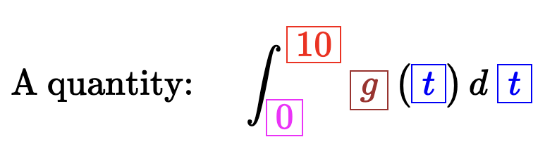
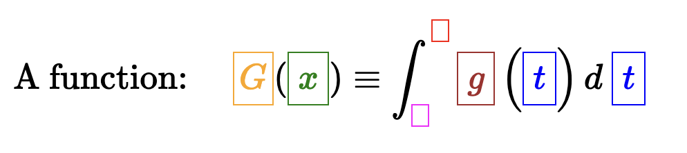
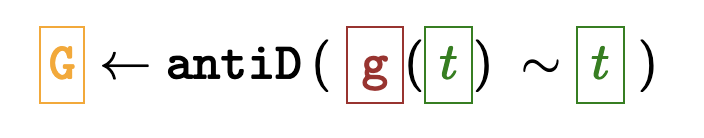
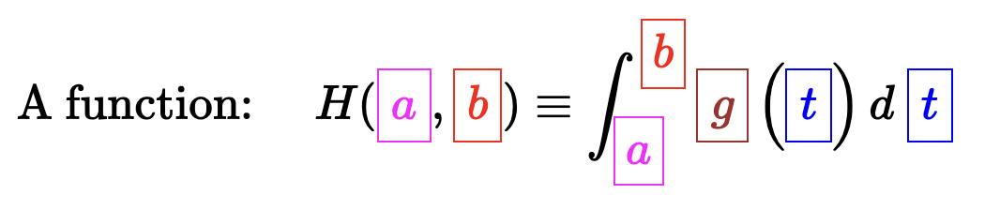
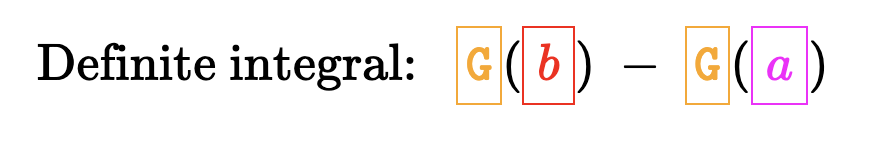
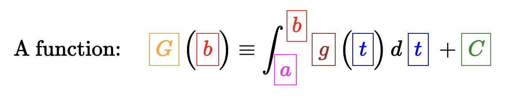

G <- antiD(cos(t) ~ t)
Gfunction (t, C = 0)
sin(t) + CDTK
April 29, 2025
“Integration” and anti-differentiation are closely related but distinct operations.
MOSAIC Calculus uses “integration” to refer to the definite type and “anti-differentiation” to produce a function. Often, but not always, you will use anti-differentiation as a first step in integrating.
The traditional notation is ubiquitous, so you have to understand it entirely.
| Notation | explanation |
|---|---|
| \[\int f(x)\ dx\] | indefinite integral |
| \[\int_0^{10} f(x)\ dx\] | definite integral over the domain \(0 \leq x \leq 10\) |
F <- antiD(f(x) ~ x) |
indefinite integral |
F(10) - F(0) |
definite integral over the domain \(0 \leq x \leq 10\) |
\[\Large\text{A quantity:}\ \ \ \ \ \int_\color{magenta}{\boxed{\,0\,}}^\color{red}{\boxed{\,10\,}} \color{brown}{\boxed{\,g\,}}\left(\color{blue}{\boxed{\color{blue}{\,t\, }}}\right) d\ \color{blue}{\boxed{\color{blue}{\,t\,}}}\] 
Color key:
\[\Large\text{A function:}\ \ \ \ \ \color{orange}{\boxed{\strut G}}(\color{green}{\boxed{\strut\,x\,}}) \equiv \int_\color{magenta}{\boxed{\,\,}}^\color{red}{\boxed{\,\,}} \color{brown}{\boxed{\strut\,g\,}}\left(\color{blue}{\boxed{\color{blue}{\strut\,t\, }}}\right) d\ \color{blue}{\boxed{\color{blue}{\strut\,t\,}}} \tag{1}\]

Equivalent in {mosaicCalc}:
\[\Large \color{orange}{\boxed{\strut {\mathtt G}}} \leftarrow \mathtt{antiD}\left(\right. {\color{brown}{\boxed{\strut \mathtt{\,g\,}}}}( \color{green}{\boxed{\strut\,t\,}} )\ \sim \color{green}{\boxed{\strut\,t\,}}\ )\]

\[\Large\text{A function:}\ \ \ \ \ H(\color{magenta}{\boxed{\strut\,a\,}}, \color{red}{\boxed{\strut\,b\,}}) \equiv \int_\color{magenta}{\boxed{\strut\,a\,}}^\color{red}{\boxed{\strut\,b\,}} \color{brown}{\boxed{\strut\,g\,}}\left(\color{blue}{\boxed{\color{blue}{\strut\,t\, }}}\right) d\ \color{blue}{\boxed{\color{blue}{\strut\,t\,}}} \tag{2}\]

Another way to write this:
\[\Large\text{Definite integral:}\ \ \ \color{orange}{\boxed{\strut {\mathtt G}}}( \color{red}{\boxed{\strut\,b\,}} ) \ - \ \color{orange}{\boxed{\strut {\mathtt G}}}( \color{magenta}{\boxed{\strut\,a\,}} ) \tag{3}\]

I think the situation is clearer in computer notation:
H() is a function of both a and b and always has the simple form G(b) - G(a).G(b) - G(a) is important.There is another, equivalent convention for Equation 2 which replaces the lower limit of integration by a constant, usually named \(C\):
\[\Large\text{A function:}\ \ \ \ \ \color{orange}{\boxed{\strut\, G\,}}\left(\color{red}{\boxed{\strut\,b\,}}\right) \equiv \int_\color{magenta}{\boxed{\strut\,a\,}}^\color{red}{\boxed{\strut\,b\,}} \color{brown}{\boxed{\strut\,g\,}}\left(\color{blue}{\boxed{\color{blue}{\strut\,t\, }}}\right) d\ \color{blue}{\boxed{\color{blue}{\strut\,t\,}}}\ + \color{forestgreen}{\boxed{\strut\,C\,}}\] 
GREEN the constant of integration.
Notice that if \(\color{green}{C} = G(a)\), then this is exactly equivalent to Equation 3.
{mosaicCalc}’s antiD() gives you this format directly, but assigns a default value to C of zero so that you can ignore it if you wish.
We’ve already memorized the derivatives of the pattern-book functions:
| name | formula | \(\partial_t\) function |
|---|---|---|
| const | 1 | 0 |
| identity | \(t\) | 1 |
| square | \(t^2\) | \(2 t\) |
| gaussian | dnorm\((t)\) | \(t\ \text{dnorm}(t)\) |
| sigmoid | pnorm\((t)\) | dnorm\((t)\) |
| sine | \(\sin(t)\) | \(\cos(t)\) |
| logarithm | \(\ln(t)\) | \(1/t\) |
| exponential | \(\exp(t)\) or \(e^t\) | \(\exp(t)\) or \(e^t\) |
| power-law | \(t^k\) | \(k t^{k-1}\) when \(k \neq 0\) |
The basic modeling functions are the pattern-book functions \(g(t)\) with input and/or output scaling, e.g. when \(f()\) where is a pattern book function.
\(g(t) = A f(a t + b) + B\) or, equivalently \(g(t) = A f(a (t - t_0)) + B\).
Here’s the basic rule for when the integrand is the derivative of a basic modeling function:
\[\large\int \left[\strut A f'(a t + b) + B\right] dt = \int A f'(a t + b)dt + \int B\, dt \ =\ \frac{A}{a} \left[f(at + b)\right] + B\,t + C\]
For instance: \[\large \int \cos(\omega t) dt = \frac{1}{\omega} sin(\omega t) + C\]
Anti-differentiation undoes differentiation \[\LARGE f(t)\ = \int \partial_t \left[f(t)\right] dt\ = \ \partial_t\left[ \int f(t) dt\right]\]
check for typos
When studying u-dimensions a while ago, we undertook to figure out how fast a satellite travels. As you recall, we measured the \(r\), the orbit height from the center of the Earth. Assuming a circular orbit (which is not necessarily a good assumption) the total path length of an orbit is \(2 \pi r\). We also assumed that the acceleration of the satellite due to gravity is 9.8 m/s^2 , the value on the Earth’s surface. (And a reasonably good approximation to the value at a height of, say, 100 mi above the surface.)
Then we asked how large is the centripetal acceleration needed to keep a satellite in orbit of radius \(r\) at velocity \(v\). We used dimensional analysis to say that \(a = v^2/r\), a formula that is dimensionally consistent.
B.1. What is the numerical value of \(\sqrt{\text{m}\cdot\text{mi}\strut}\) expressed in miles?
The change in the velocity vector over half the orbital time is simple: \({\mathbf v}_3 - {\mathbf v}_1 = {\mathbf v}_3 + {\mathbf v}_3 = 2 {\mathbf v}_3\).
Now calculus comes in: the change in velocity is the integral with respect to time of acceleration over the time to complete half an orbit. \[\int_{t=\text{start}}^{t=\text{end}} {\mathbf a}\, dt = 2 {\mathbf v}_3\]
We can simplify by setting the “start” time to zero. The end time is how long it takes to complete half an orbit. This will be the distance covered divided by the speed. The half circumference of the orbit is \(\pi r\). The speed of the satellite is \(|v|\). So the end time is \(\pi r/ v\).
Although the magnitude of the acceleration is constant, the acceleration is a vector which is certainly not constant as the satellite moves through the orbit. And, being a vector, we need to keep track of the changing components of the vector. Referring to the diagram, only the “horizontal” component of the acceleration contributes to the change in velocity from point 1 to point 3, because that change is entirely horizontal.
Look at an intermediate point between 1 and 3. The vector \({\mathbf v}_2\) is shown at an angle \(\theta\) from the \({\mathbf v}_1\). At point 2, the acceleration vector is directed (as always) toward the center of the orbit. The horizontal component of the acceleration vector is \(a \sin(\theta)\), as you can see from the trigonometry of the situation. The previous integral should have been written in terms of the horizontal component of the acceleration:
\[\int_{t=0}^{t=\pi r/v} |{\mathbf a}|\,\sin(\theta)\, dt \] Keep in mind that \(\theta\) is a function of \(t\). The relationship is \[\theta = v t / r \ \ \implies\ \ \ d\theta = \frac{v}{r}dt\]
We’ve written the differential of the relationship because we will substitute for \(t\) and \(dt\) to translate the integral to be solely in terms of \(\theta\): \[\int_{\theta=0}^{\theta = \pi} |{\mathbf a}| \sin(\theta)\frac{r}{v}\, d \theta = |{\mathbf a}| \frac{r}{v} \int_{\theta=0}^{\theta = \pi} \sin(\theta)\, d \theta\] The integral involves one of the basic modeling functions, so you have already memorized the answer.